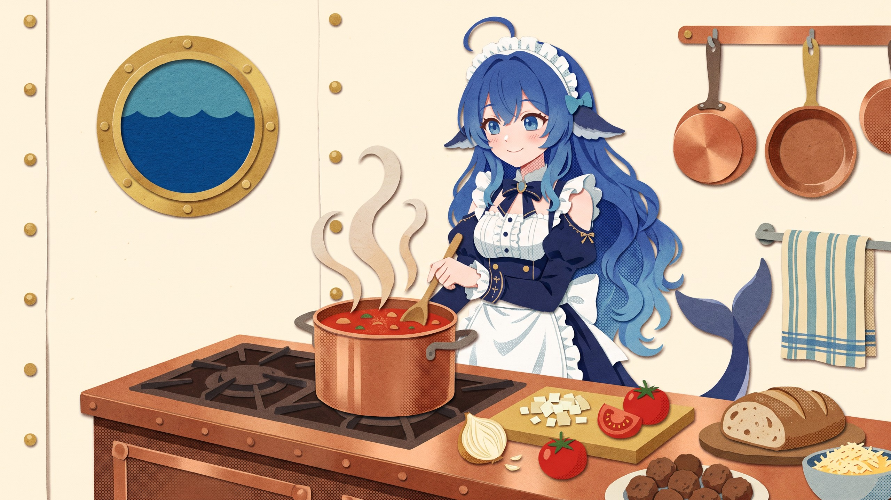

TOMATO
very ripe · 6
ONION
blocks · 1
MEATBALL
seats · 12
RECIPE No. 07
SERVES: THE ATLANTIC
Tomato sauce
simmering
with
onion blocks
low heat
stir slowly
do not sink
How exciting!
CHEF'S NOTE
washing up: later
The galley, 2,040 m down
PRESSURE: FINE · DINNER: ON TIME